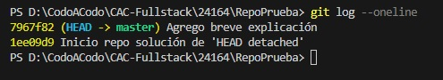
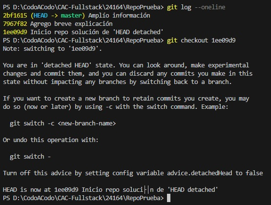

Recorriendo los nodos o «commits» generados
Cuando trabajamos con el control de versiones, las mismas se generan a través de git commit.
A su vez las versiones se conectan a través de una «rama» (o branch), una suerte de línea del tiempo.
Aclaración: de acuerdo a lo visto en clase siempre trabajamos sobre la misma rama, llamada master (o main en algunos casos).

Si utilizamos la instrucción git checkout «número del commit» nos podemos mover a una versión anterior del repositorio.
